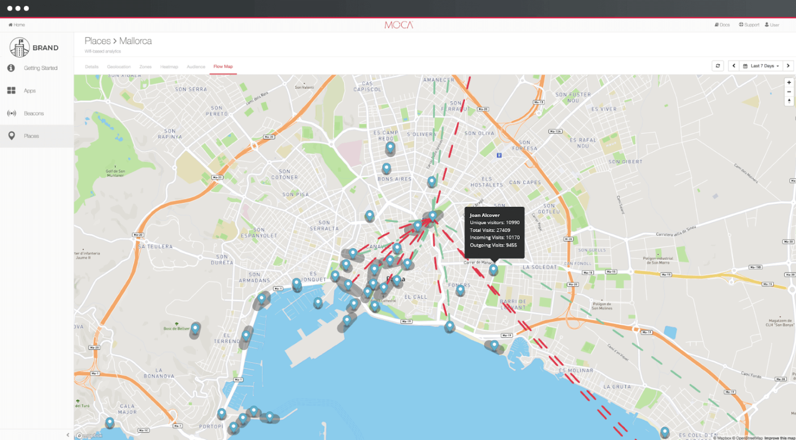

Aplicación práctica de metodologías ágiles
Caso de estudio: MOCA Platform
Tirso Garcia, Gerardo, Joan
Presentación
Moca platform es una startup que ofrece una herramienta de marketing basada en la localización. Se trata de un modelo B2B, donde el partner integra un SDK en su app que alimenta un dashboard con analíticas, mapas y herramientas para lanzar campañas (notificaciones).
Actuales roles en MOCA
CEO
Meetings con potenciales partners, conferencias, etc.
CTO
50% tareas que la CEO. El otro 50% dividido entre CTO real y Product Owner
Responsable de Marketing

No se la tiene muy en cuenta en la creación del producto. Gestiona la imagen que se proyecta de MOCA en la landing. Ayuda a los clientes a usar la herramienta.
Ventas
Busca partners y acuerdos con posibles clientes.
Dissenyadora gráfica

A veces interviene en la UI del producto. Normalmente se ocupa de la landing, videos promocionales, etc.
Front End developer

Se necarga del Front end del dashboard
Backend developer

Mantiene varias api que consume tanto el dashboard com el sdk
SDK Developer

Se encarga del desarollo y mantenimiento del SDK para android y IOS
Client support

Gestiona las relaciones post-venta, quejas, etc.